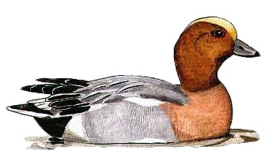

Wigeon
A common winter visitor in small numbers. Usually seen in large flocks in winter on estuaries around the country.

1929 - 'Frequent'
17/04/33 - Single male
20/12/53 - 5 birds
30/10/55 - 10 birds
. 27/11/55 - 10 birds
No further records until 1964.
02/01/64 - 44 birds. (DEP)
20/01/72 - 10 birds
05/11/72 - Single bird
01/01/79 - 19 birds
??/02/84 - 7 birds
??/09/84 - Maximum count of 9 birds
02/02/85 - Maximum count of 95 birds. Record count
??/12/85 - 12 birds
??/02/86 - 10+ birds
25/01/87 - At least 55 birds
21/02/87 - 6 birds
19/10/87 - 9 birds
19/05/88 - Single male
03/10/88 - 3 birds
23/07/89 - Single male
18/10/91 - Single bird
14/12/91 - 3 birds
04/01/92 - Single female
23/01/92 - Single male
20/09/92 - 3 birds
06/10/92 - Single male
10/12/92 - 8 birds
10/01/93 - Single male
10/12/93 - 3 females
03/12/94 - 2 pairs
24/12/94 - 23 birds. Due to cold weather movements
29/12/95 - 5 birds
??/01/96 - 7 birds
21/02/96 - 19 birds
15/11/96 - 13 birds
25/12/96 - 11 birds
02/01/97 - 22 birds
20/09/98 - One looking much like an eclipse male American Wigeon (KGH)
06/10/98 - 7 birds
16/11/98 - 3 bird.
02/12/98 - 5 birds
11/01/99 - 4 birds. 2 seen on 21/01
17/03/99 - Single bird.
12/11/99 - 3 birds. 2 seen on 15/11 & again on 15/12
18/01/00 - 6 birds. 5 seen on 26/01
06/11/00 - 8 birds reducing to 2 the next day
30/12/00 - 1 male
2001 - Seen on 11 dates from 21/09 to end of year. Max 10 on 21/10
2002 - Recorded on 6 dates from 04/09 to end of year. Max 5 on 28/12
2003 - Recorded on 12 winter dates with max of 18 on 14/10
2004 - Recorded on 40 winter dates with max of 9 on 14/10
2005 - Recorded on 27 winter dates with max of 13 on 28/12
2006 - Recorded on 12 dates with max of 3 from 22/09 to 25/09
2007 - Recorded on 22 winter dates mainly singles but occasionally 2
2008 - Recorded on 18 winter dates with max 3 birds
2009 - Recorded on 14 winter dates with max 8 on 22/12/09
2010 - Recorded on 41 winter dates with max 22 on 27/12
2011 - Recorded on 38 winter dates with up to 6 birds
2012 - Recorded on 52 winter dates with 10 on 02/01 then 1 or 2 birds
2013 - Recorded on 37 dates with max 5 on 14/01
2014 - Recorded on 30 dates with max 7 on 31/10
2015 - Recorded on 24 dates with max 8 on 13/11
2016 - Recorded on 44 dates with max 15 on 29/12
2017 - Recorded on 105 dates with max of 10 on 5 dates in January and also 10 on 26/09
2018 - Recorded on just 7 dates with max 18 on 14/12
2019 - Recorded on just 4 dates with just one or two birds
2020 - Recorded on 13 dates with max 16 on 02/10
2021 - Recorded on just 6 dates with max of 6 on 12/02
2022 - Recorded on 9 dates, all singles apart from 3 on 13/01
2023 - Just one record of a male on 26/10
2024 - Just one record of a pair which arrived at dusk on 29/12
2025 - Recorded on 4 dates. 3 on 02/01, 5 on 18/01, pair on 29/09 and 1 male on 29/10